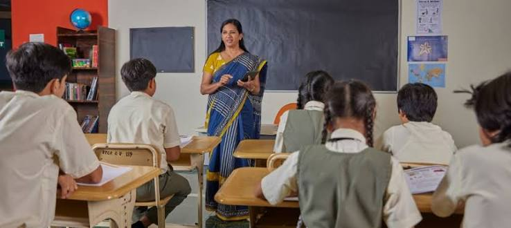

What Is Education?
Education is a process through which people acquire knowledge, skills, values and attitudes that support personal growth and participation in society. It takes place in formal institutions, informal settings and everyday experiences.
Types of Education
Formal education takes place within organised institutions and usually follows a planned curriculum. Non-formal education includes organised learning outside the conventional school system, such as adult literacy programmes. Informal learning occurs through daily life, family, work and community experiences.
The Importance of Education
Education can improve literacy, problem-solving, communication and employment opportunities. It also helps people understand their rights and responsibilities, evaluate information and participate more effectively in community development.
Teachers and Learners
Effective teaching involves more than presenting information. Teachers can encourage learners to ask questions, discuss ideas, practise skills and apply knowledge to real situations. Learners also need curiosity, effort, feedback and opportunities to reflect on their progress.
Education and Critical Thinking
Education is most powerful when it develops independent thinking alongside subject knowledge. Learners should be able to examine evidence, recognise weak arguments, compare explanations and make reasoned decisions.